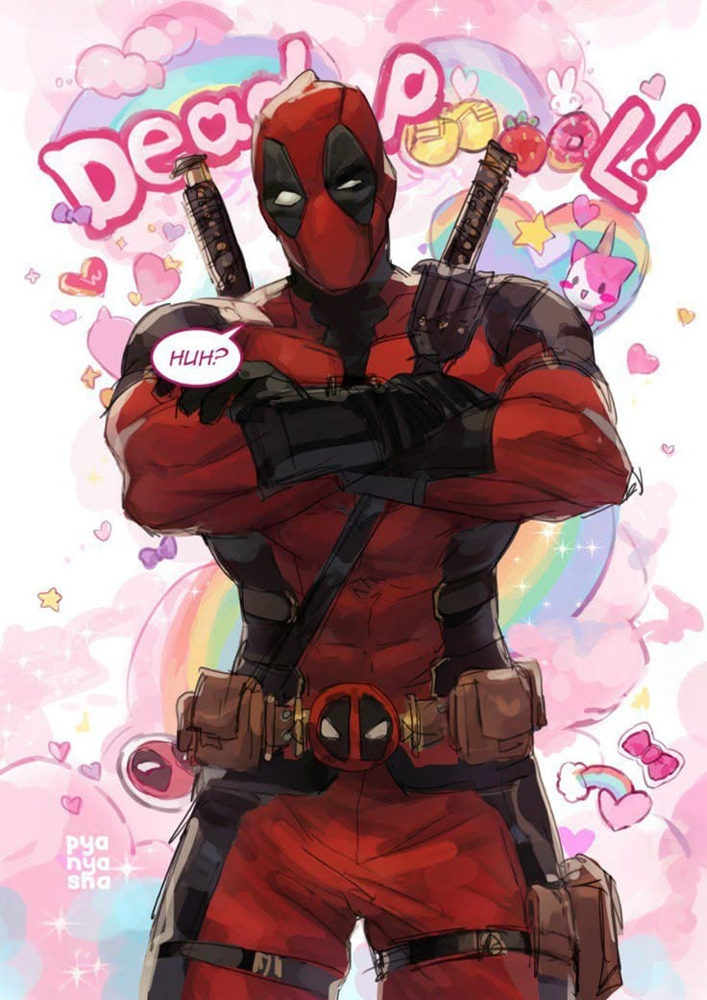

Аузына ие емес жалдамалы қаһарман | Marvel әлемі

Дэдпул — Marvel комикстерінің кейіпкері. Оның шын есімі — Уэйд Уилсон. Ол ерекше әзілдерімен, сарказмымен және күтпеген әрекеттерімен танымал.
Шын есімі: Уэйд Уилсон
Лақап аты: Дэдпул
Баспасы: Marvel Comics
Алғашқы пайда болуы: 1991 жыл
Лақап атауы: Аузына ие емес жалдамалы
Дэдпул — әзілқой, сөзшең және болжауға келмейтін кейіпкер. Ол тіпті маңызды жағдайлардың өзінде әзілдеуді ұнатады. Өзінің ерекше мінезіне қарамастан, жақындарына қамқорлық танытып, оларға адал бола алады.
Дэдпул үнемі әзіл айтып, сарказм қолданады.
Ол көрермендерге тікелей сөйлей алады.
Дэдпул таконы жақсы көреді.
Маған Дэдпул өзінің ерекше мінезімен, әзілқойлығымен және қайталанбас ерекшелігімен ұнайды. Ол басқа суперқаһармандардан өзгеше, себебі өзін тым байсалды ұстамайды. Оның сарказмы мен күтпеген әрекеттері кейіпкерді қызықты әрі есте қаларлық етеді.